Beckhoff TwinCAT3
Import ESI File
Copy the downloaded ESI files to “C:\TwinCAT\<Version>\Config\Io\EtherCAT”.
|

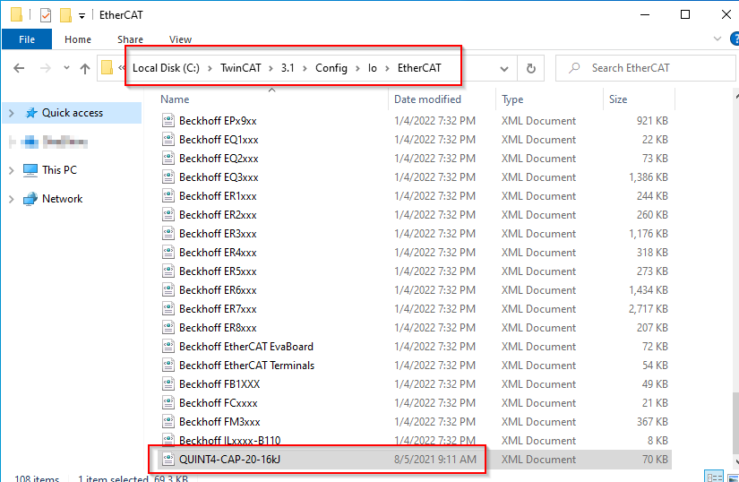
|
Use the “Reload Device Descriptions”-Function of TwinCAT3.
|

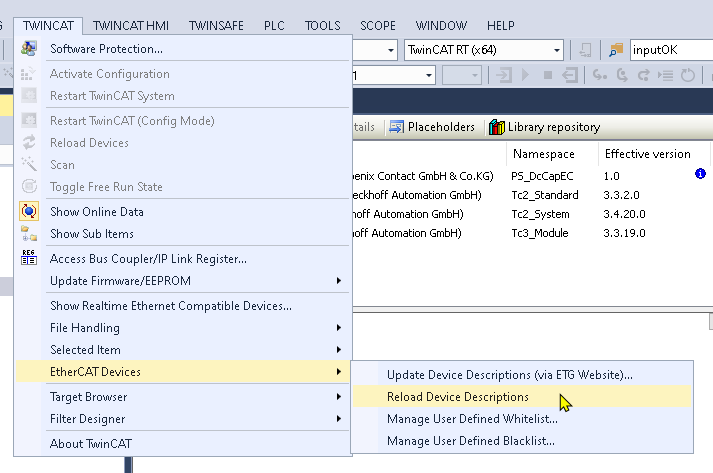
|
Hardware Configuration
There are two ways to set up the hardware configuration. First way is to scan the network for devices.
|
<picture>
|
Second way is to add the devices manually. Right click on the EtherCAT Master and select “Add New Item…”.
|

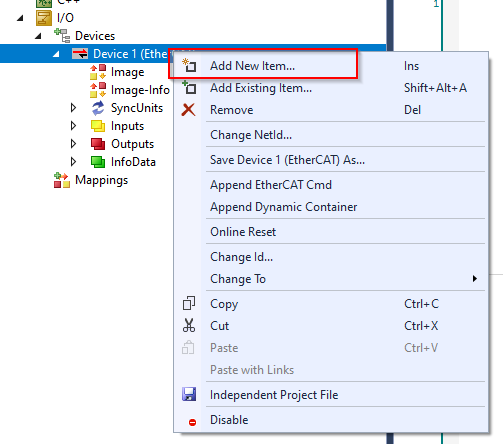
|
Navigate to “Phoenix Contact” and choose the UPS used. For older device revisions set the hooks on “Extended Information” and “Show Hidden Devices”.
Device Revision |
UPS hardware configuration in TwinCAT3 |
|---|---|
V/C 00 |
<Ordernumber> \ 0 |

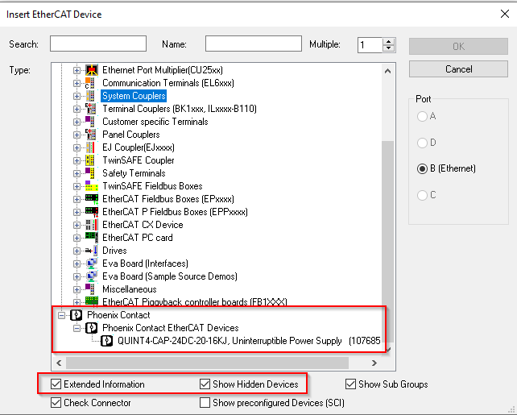
|
Afterwards click “OK” and the UPS will be added to the hardware configuration.
|

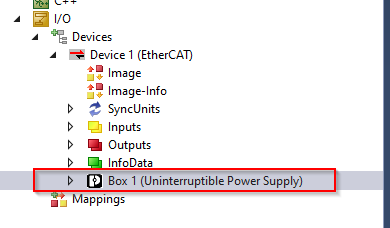
|
Software Configuration
Installing the library
To install the library right click on “References” in the project tree on the left and select “Library repository”.
|

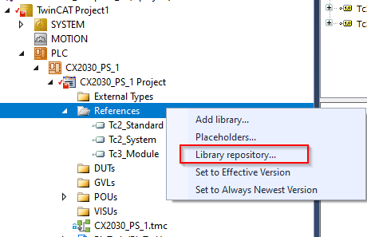
|
Click “Install”.
|

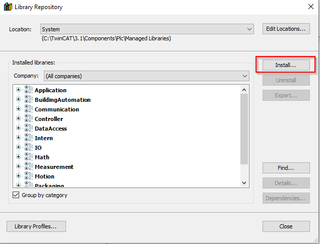
|
Browse to the downloaded compiled library and open it. The library will be installed to the repository.
|

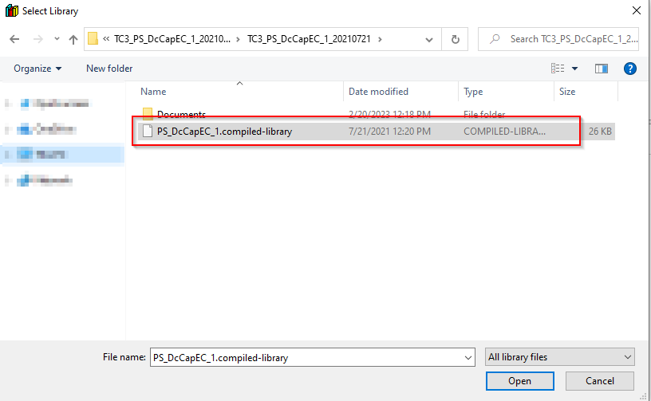
|
Insert the library into the project by right click on “References” and select “Add library”.
|

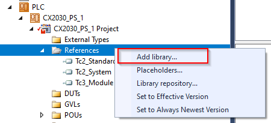
|
Open “Miscellaneous”, select the previously installed library and press “OK”.
|

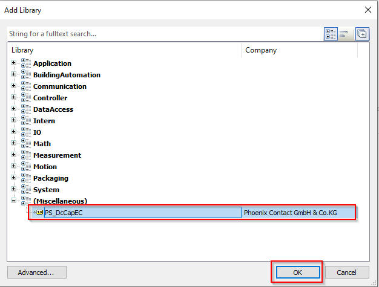
|
Function Block PS_Q4_DcCapEC_Cyclic
This function block decodes cyclic process data of the QUINT4 DC CAP.

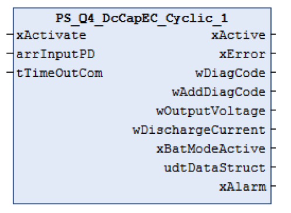
|
Inputs
Name |
Type |
Description |
|---|---|---|
xActivate |
BOOL |
TRUE: Activates function block. |
arrInputPD |
Array[0..10] of WORD |
Process data from CAP. WORD array with the limits 0 to 10 |
tTimeOutCom |
TIME |
Timeout for inactive communication of CAP module. Default: 20s |
Outputs
Name |
Type |
Description |
|---|---|---|
xActive |
BOOL |
TRUE: Function block is active |
xError |
BOOL |
TRUE: An error has occurred. For details refer to wDiagCode and wAddDiagCode. |
wDiagCode |
WORD |
Diagnostic code. Refer to diagnostics table. |
wAddDiagCode |
WORD |
Additional diagnostic code. Refer to diagnostics table. |
wOutputVoltage |
WORD |
Output voltage of CAP in mV |
wDischargeCurrent |
WORD |
Discharge current of CAP in mA |
xBatModeActive |
BOOL |
TRUE: Device is in Buffer Mode |
udtDataStruct |
PS_CAP_udtDataStruct |
Structure of CAP specific data. Refer to appendix |
xAlarm |
BOOL |
TRUE: An Alarm has occured |
Diagnosis
wDiagCode |
wAddDiagCode |
Description |
|---|---|---|
16#0000 |
16#0000 |
The function block is not active. |
16#8000 |
16#0000 |
The function block is active. |
16#C415 |
16#0000 |
Timeout while receiving data. |
Open Main program in the project tree on the left and insert a new box.
|

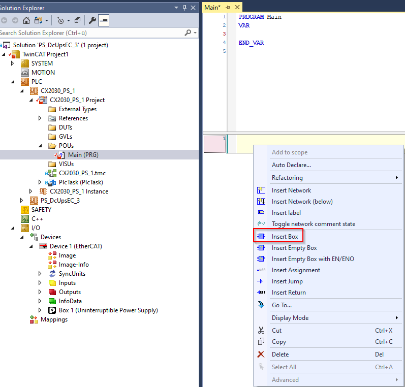
|
Select the “PS_Q4_DcCapEC_Cyclic” function block in the Input assistant and insert it into the Main program by clicking “OK”.
|

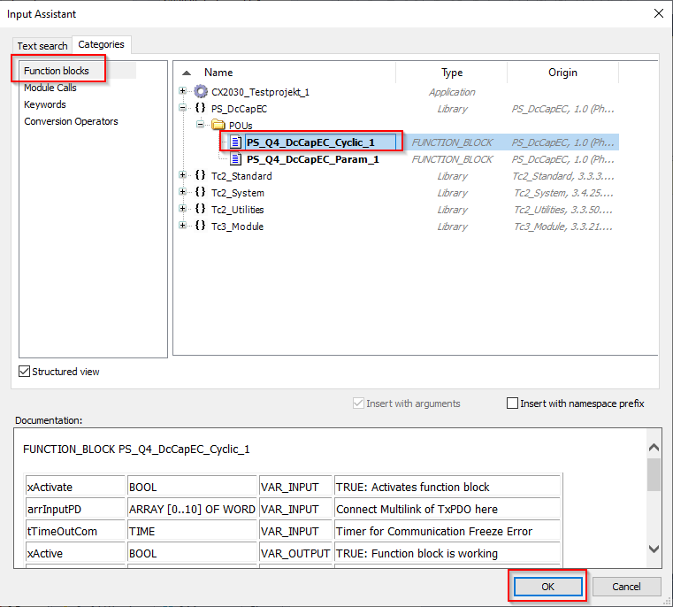
|
Connect needed variables to the in- and outputs of the function block. Make sure that the connected
variable at “arrInputPD” has the extension “AT %I*” otherwise it won’t be available as a variable for connecting to the
process data of the CAP.
|

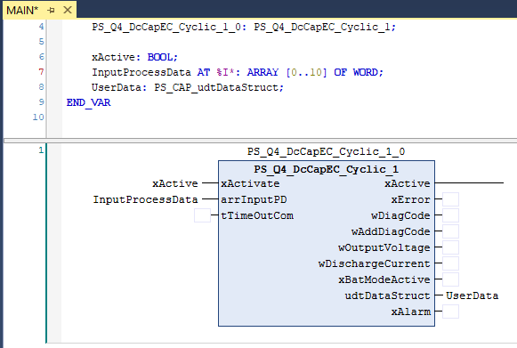
|
Select all PDOs in the hardware configuration of the CAP on the left side, right click on selection and click “Change Multi Link”.
|

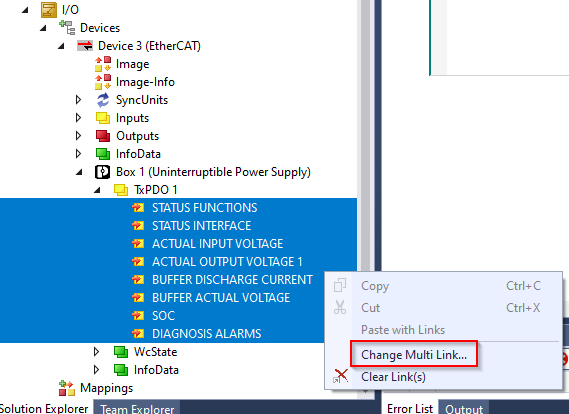
|
Choose the previously defined variable of your Main program for connecting the process data of the CAP with you program.
If the variable does not show up in the left window set “All types” on the right side to make it visible.
|

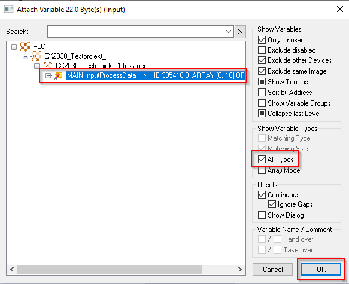
|
Afterwards compile and download the project to the PLC. After activating the function block via “xActivate” the cyclic values of the CAP are shown at the outputs of the function block.
Function Block PS_Q4_DcCapEC_Param
Function block reads/writes parameter from/to the QUINT4 DC CAP.

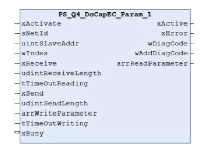
|
Inputs
Name |
Type |
Description |
|---|---|---|
xActivate |
BOOL |
TRUE: Activates function block. |
sNetID |
STRING |
NetID of EC-Controller |
uintSlaveAddr |
UINT |
Device address of CAP |
wIndex |
WORD |
Address of parameter for reading/writing |
xReceive |
BOOL |
Rising edge: Receive data from parameter “wIndex” with length of “udintReceiveLength” |
udintReceiveLength |
UDINT |
Number of receiving bytes |
tTimeOutReading |
TIME |
Timeout for reading parameter. Default: t#500ms |
xSend |
BOOL |
Rising edge: Send data to parameter “wIndex” with length of “udintSendLength” |
udintSendLength |
UDINT |
Number of sending bytes |
arrWriteParameter |
Array[0..7] of DWORD |
Buffer for sending data. DWORD array with the limits 0 to 7. |
tTimeOutWriting |
TIME |
Timeout for writing parameter. Default: t#500ms |
Outputs
Name |
Type |
Description |
|---|---|---|
xActive |
BOOL |
TRUE: Function block is active |
xError |
BOOL |
TRUE: An error has occurred. For details refer to wDiagCode and wAddDiagCode |
wDiagCode |
WORD |
Diagnostic code. Refer to diagnostics table. |
wAddDiagCode |
WORD |
Additional diagnostic code. Refer to diagnostics table. |
arrReadParameter |
Array[0..7] of DWORD |
Buffer for received data. DWORD array with the limits 0 to 7. |
In- and Outputs
Name |
Type |
Description |
|---|---|---|
xBusy |
BOOL |
TRUE: The block is busy with the service execution. |
Diagnosis
wDiagCode |
wAddDiagCode |
Description |
|---|---|---|
16#0000 |
16#0000 |
The function block is not active. |
16#8000 |
16#0000 |
The function block is active. |
16#C110 |
Wrong parameter |
|
16#0002 |
Invalid parameter at sNetID (= ’’) |
|
16#0003 |
Invalid parameter at uintSlaveAddr (= 0) |
|
16#C350 |
Read error |
|
16#0703 |
Invalid offset for reading parameter |
|
16#0705 |
Invalid parameter size |
|
16#0745 |
Timeout while reading parameter |
|
16#C351 |
Write error |
|
16#0703 |
Invalid offset for writing data |
|
16#0704 |
Read only, writing not allowed |
|
16#0705 |
Invalid parameter size |
|
16#0706 |
Violation of parameter limit |
|
16#070D |
Invalid parameter size |
|
16#0745 |
Timeout while writing parameter |
Open Main program in the project tree on the left and insert a new box.
|
|
Select the “PS_Q4_DcCapEC_Param” function block in the Input assistant and insert it into the Main program by clicking “OK”.
|

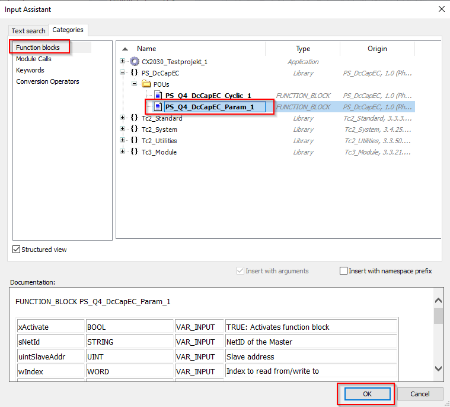
|
Connect all needed in- and outputs to the function block.
|

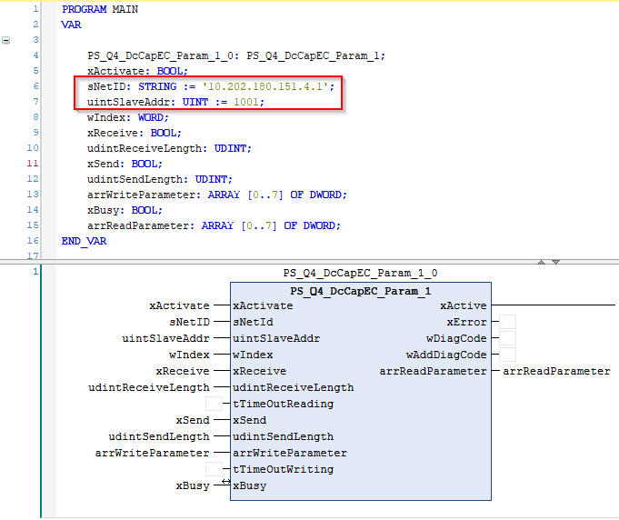
|
“sNetID” and “uintSlaveAddr” can be looked up in the hardware configuration of the EtherCAT controller.
|

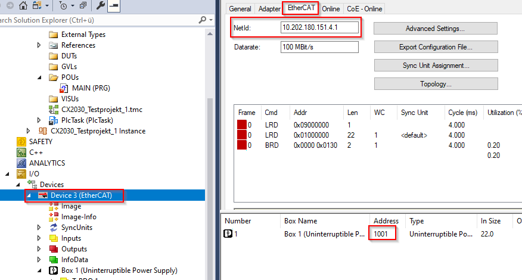
|
Appendix
DATA TYPES
PS_CAP_srSTATUS_FUNCTIONS
Tag |
Type |
Description |
|---|---|---|
xStartUpActive |
BOOL |
Device is starting |
xMainPowerModeActive |
BOOL |
Device is in mains mode |
xBatteryModeActive |
BOOL |
Device is in buffer mode |
xOutput |
BOOL |
Output of device is on/off |
xChargerOn |
BOOL |
Charger of device is on/off |
xRemoteConnected |
BOOL |
Remote DI connected/disconnected |
xBatDelay1Active |
BOOL |
Buffer mode delay time 1 is active |
xBatDelay2Active |
BOOL |
Buffer mode delay time 2 is active |
xBatDelay3Active |
BOOL |
Buffer mode delay time 3 is active |
xBufferReady |
BOOL |
Connected energy storage is ready to buffer |
xBatteryPresent |
BOOL |
Energy storage connected/disconnected |
xTriggerLogData |
BOOL |
New log data available |
xInputVoltageOK |
BOOL |
Input voltage in valid range |
xParallelModeActive |
BOOL |
Device works in parallel mode |
PS_CAP_srSTATUS_INTERFACE
Tag |
Type |
Description |
|---|---|---|
xDO_Alarm |
BOOL |
DO1 is active/inactive |
xDO_UinOK |
BOOL |
DO2 is active/inactive |
xDO_Ready |
BOOL |
DO3 is active/inactive |
xDI_Remote |
BOOL |
DI1 is active/inactive |
xLED_Ready |
BOOL |
LED Ready is on/off |
xLED_UinOK |
BOOL |
LED UinOK is on/off |
xLED_Alarm |
BOOL |
LED Alarm is on/off |
PS_CAP_udtDataStruct
Tag |
Type |
Description |
|---|---|---|
srSTATUS_FUNCTIONS |
PS_CAP_srSTATUS_FUNCTIONS |
DO1 is active/inactive |
srSTATUS_INTERFACE |
PS_CAP_srSTATUS_INTERFACE |
DO2 is active/inactive |
InputVoltage |
INT |
CAP input voltage in mV |
OutputVoltage |
INT |
CAP output voltage in mV |
DischargeCurrent |
DINT |
CAP discharge current in mA |
BufferVoltage |
INT |
Buffer voltage in mV |
SOC |
INT |
State of charge in % |